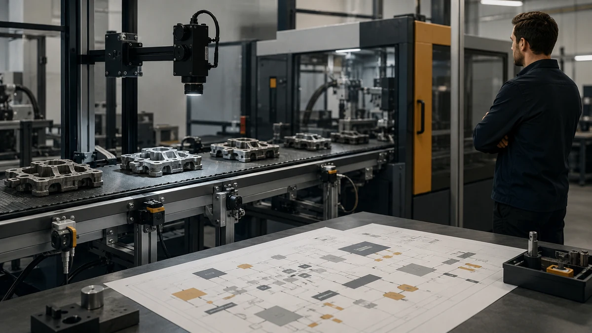
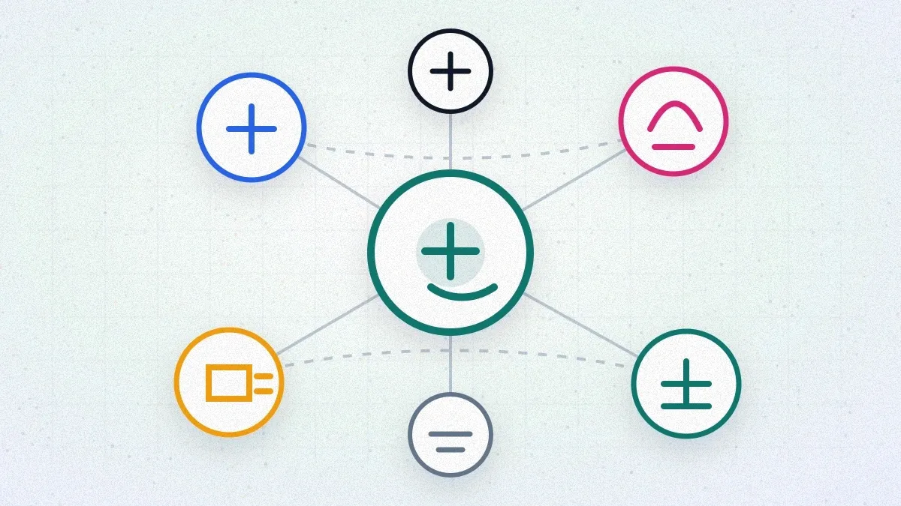
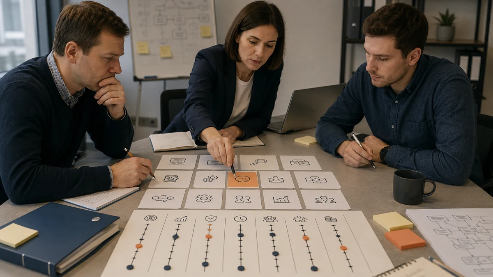
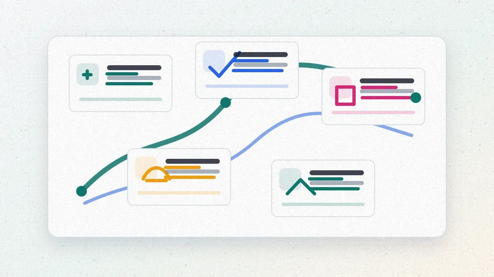

Гайды
Практические материалы об ИИ для бизнеса и повседневной работы.

ИИ для производства: сценарии, внедрение и окупаемость
ИИ для производства: где окупается, как выбрать первый пилот, какие данные нужны, как считать эффект, риски 152-ФЗ и сценарии внедрения.
Чем ИИ-агент отличается от чат-бота: разница на пальцах
Чат-бот отвечает, ИИ-агент действует: сравнение по 8 признакам, сценарий возврата товара в трёх исполнениях, цены и когда агент не нужен.
ИИ-агенты в поддержке клиентов: сценарии, метрики и окупаемость
ИИ-агенты в поддержке клиентов: шесть рабочих сценариев, кейс первой линии в интернет-магазине, расчёт окупаемости, метрики качества и когда агент не окупится.
ChatGPT в России 2026: установка, подписка Plus, оплата
Как пользоваться ChatGPT из России в 2026: регистрация через VPN, установка приложений, оплата Plus через МТС Оплату, Озон Банк и посредников. Проверено в июне 2026.
Claude в России 2026: как пользоваться, установить и оплатить
Как зарегистрироваться в Claude из России, выбрать тариф, оплатить Pro через посредников и настроить Claude Code. Проверено в июне 2026.
Карты и сервисы для оплаты зарубежных ИИ-подписок из России
Все способы оплатить ChatGPT, Claude и другие ИИ-подписки из России: каталоги МТС и Озона, посредники, виртуальные карты. С расчётом переплаты за год. Проверено в июне 2026.

ИИ для продаж: агенты, сценарии и расчёт окупаемости
ИИ для продаж: где помогает агент, какие сценарии автоматизировать, кейс квалификации лидов, расчёт окупаемости и риски внедрения.

ИИ-агенты для бизнеса: что это и где применять
Что такое ИИ-агент, чем отличается от чат-бота, из чего состоит, уровни автономности, 10 сценариев применения, кейс и расчёт окупаемости.
ИИ для малого бизнеса: с чего начать
Практический гайд для малого бизнеса: четыре сценария ИИ за месяц, бюджет первого пилота 50–250 тыс ₽, кейс окупаемости и риски по 152-ФЗ.

Как выбрать первый ИИ-проект в бизнесе: скоринг и 12 кандидатов
Семь критериев выбора первого ИИ-проекта со взвешенным скорингом, оценка 12 типовых кандидатов и кейс решения в дистрибьюторской компании.
Какие бизнес-процессы автоматизировать с помощью ИИ: матрица и 10 сценариев
Какие процессы стоит автоматизировать с помощью ИИ: матрица эффект×сложность×риск×данные, 10 готовых сценариев, кейс и калькулятор окупаемости.
Ошибки внедрения ИИ в компании: 10 типовых провалов и как их избежать
Десять самых частых ошибок внедрения ИИ в компании: старт с инструмента, нет владельца, плохие данные, нет лимита расходов. Кейс провала и расчёт цены ошибки.

Сколько стоит внедрение ИИ в компанию: бюджет, статьи расходов и калькулятор
Практический разбор стоимости внедрения ИИ: бюджет пилота и рабочего запуска, статьи расходов, калькулятор, примеры для продаж, поддержки и документов.

Как внедрить ИИ в бизнес в 2026 году: пошаговый план для руководителя
Пошаговый план внедрения ИИ в бизнес: выбор первого проекта, данные, инструменты, экономика, риски, ошибки, план 30/60/90 дней и критерии окупаемости.